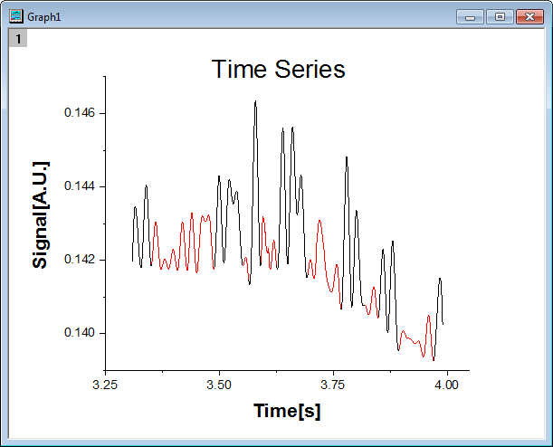
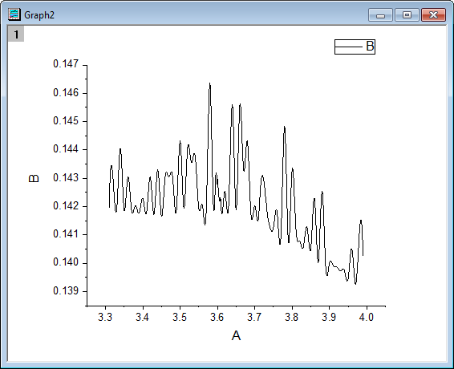
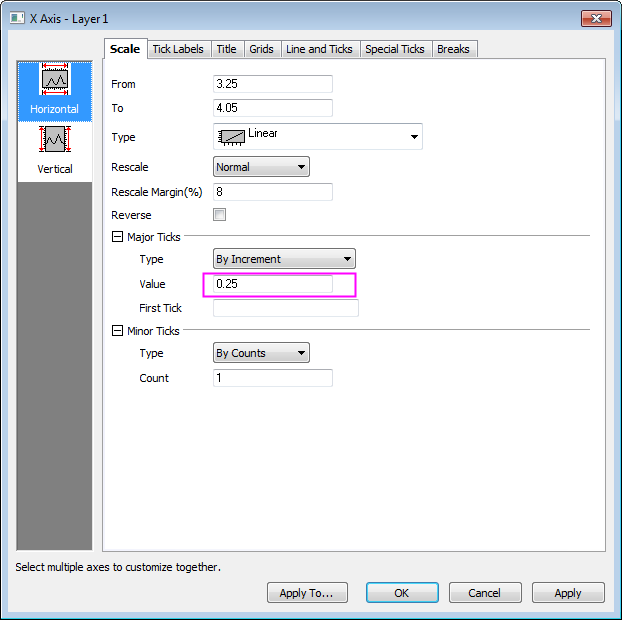
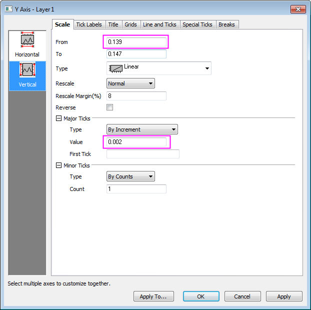
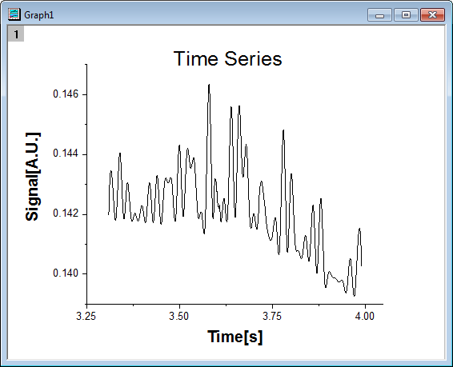
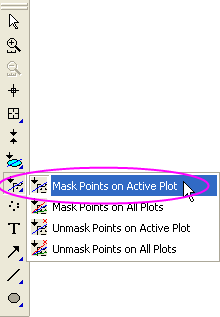

Liniendiagramm mit maskierten Daten
LineGraph-MaskedData
Zusammenfassung
Sie können grafisch Unterbereiche maskieren. In diesem Tutorial wird zuerst ein Liniendiagramm erstellt. Dann wird das Maskierungshilfsmittel verwendet, um die niedrigen Impulse des Diagramms zu maskieren.
- 
Origin-Version mind. erforderlich: Origin 2015 SR0
Was Sie lernen werden
- Liniendiagramm zeichnen
- Achsenskalierungen festlegen
- Daten auf dem Liniendiagramm maskieren
Schritte
- Öffnen Sie eine leere Arbeitsmappe. Wählen Sie Hilfe: Ordner öffnen: Sample-Ordner ... im Menü, um den Ordner "Samples" zu öffnen. Öffnen Sie in diesem Ordner den Unterordner Graphing. Dort befindet sich die Datei Line_Graph_with_Masked_Data.txt. Ziehen Sie diese Datei per Drag&Drop in das leere Arbeitsblatt, um sie zu importieren.
- Markieren Sie beide Spalten in dem Arbeitsblatt und wählen Sie Zeichnen: Einfache 2D: Liniendiagramm im Origin-Hauptmenü, um ein Liniendiagramm zu zeichnen.
- 
- Klicken Sie doppelt auf die X-Achse, um den Dialog Achsen zu öffnen. Setzen Sie den Inkrementwert auf 0,25, wie auch im Bild unten gezeigt:
- 
- Klicken Sie auf das Symbol Vertikal im linken Bedienfeld, um die Skalierung der Y-Achse wie im folgenden Bild festzulegen:
- 
- Klicken Sie auf OK, um den Dialog Achsen zu schließen und die Diagrammlegende zu löschen. Ändern Sie die X-Beschriftung in Time[s] und die Y-Beschriftung in Signal[A.U.]. Machen Sie beide Textbeschriftungen fett und setzen Sie die Schriftgröße auf 28. Erstellen Sie einen Titel, indem Sie ein Textobjekt mit dem Inhalt Time Series einfügen. Machen Sie den Titel fett und setzen Sie die Schriftgröße auf 36.
- 
- Aktivieren Sie dieses Diagramm und klicken Sie dann auf die Schaltfläche Regionales Maskierungshilfsmittel auf der Symbolleiste Hilfsmittel, bis ein Menü angezeigt wird. Wählen Sie die Option Punkte auf aktiver Zeichnung maskieren, um den Maskierungsmodus aufzurufen.
- 
- Klicken Sie auf eine geeignete Stelle in dem Diagramm und ziehen Sie ein Rechteck auf, um die niedrigen Peaks auszuwählen und damit gleichzeitig zu maskieren. Ziehen Sie weitere Rechtecke auf, bis alle niedrigen Peaks maskiert sind. Klicken Sie dann auf die Schaltfläche Zeiger auf der Symbolleiste Hilfsmittel, um den Maskierungsmodus zu beenden.
 |
Seit Origin 2021 wurde etwas am Auswahlmodus der Datenpunkte von Maskierungshilfsmitteln geändert:
-
- Der Standard wurde von Maskieren nach Zeilenindexnummer in Maskieren nach rechteckigen Bereich geändert.
- Ansonsten bleibt das Verhalten wie zuvor: Das Umschalten zwischen den Maskierungsmodi geschieht über das Drücken der Leertaste .
- Sie können die Systemvariable @MTI=1 verwenden (anhaltend), um standardmäßig nach Zeilenindex zu maskieren.
|